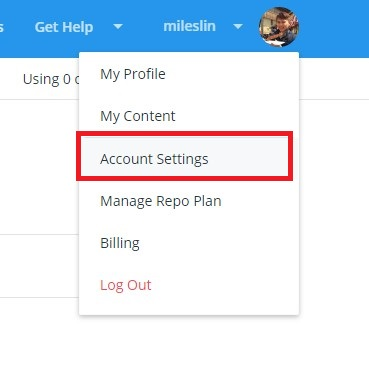
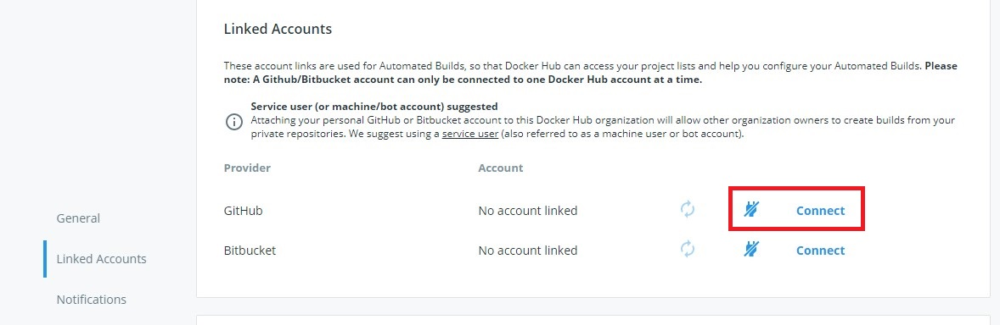
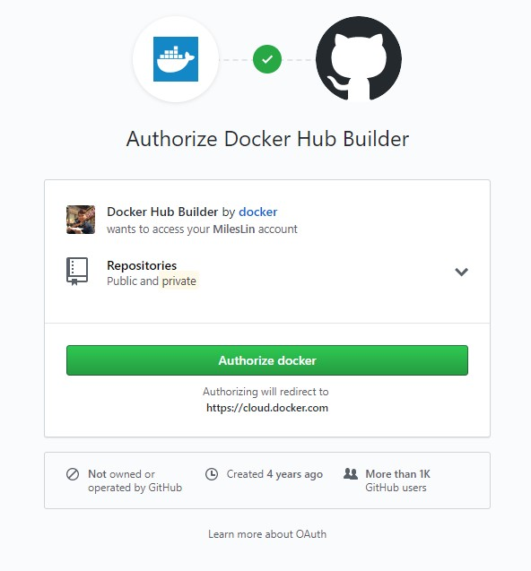
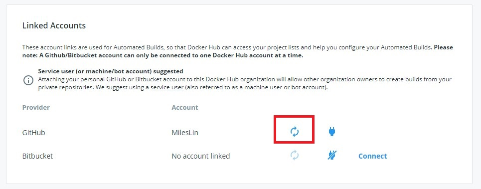
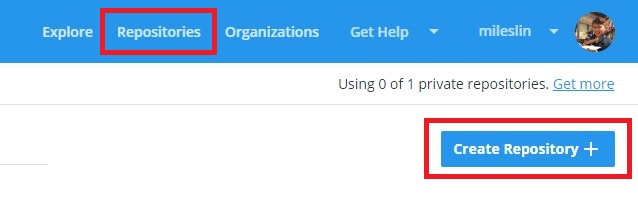
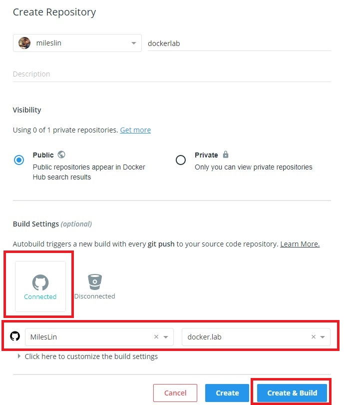
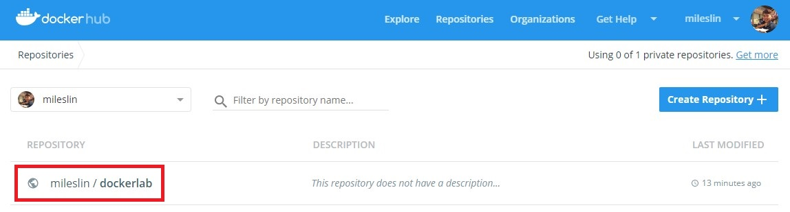
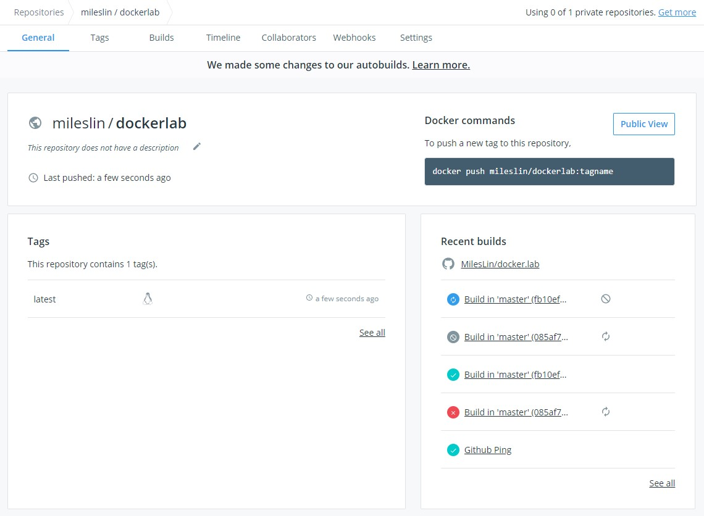
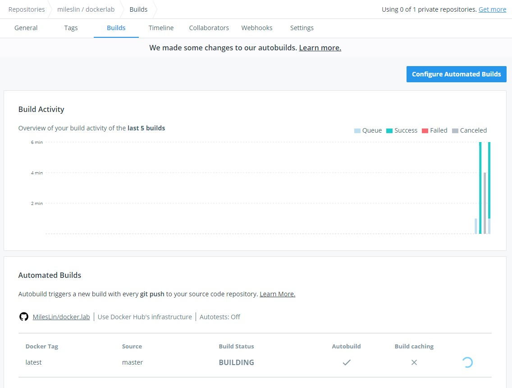

[Docker] 使用 GitHub 進行自動化建置
Docker Hub 與 GitHub 的 CI/CD 整合做的非常的好，所以在設定上也非常的直覺，今天就要來介紹怎麼在 Docker Hub 與 GitHub 之間完成 CI/CD 的工作。
前提概要
在文章開始之前一定要有 Docker Hub 帳號與 GitHub 帳號，並且準備好一個 GitHub Repository 裡面，且原始碼裡 一定要有 Dockerfile，這篇文章的 GitHub Repository 是以我的 GitHub - Docker.Lab 為範例，是一個 ASP.NET Core 專案，且原始碼裡面已經有一個可以建置的 Dockerfile。
如果不知道怎麼在 CI/CD 建立可以建置的 Dockerfile，請先閱讀這篇文章 Docker 多階段建置映像檔 (multi-stage build)，以 ASP.NET Core 為例 。
那麼，就讓我們開始吧。
設定 GitHub 連結
第一步驟我們要先讓 Docker Hub 與 GitHub 連結。
- 請先到 https://cloud.docker.com 登入後，點選 Account Settings 。account_setting_menu
到 Linked Accounts 頁籤， 點選 GitHub 的 Connect。
Linked_Accounts授權 Docker Hub Builder
Authorize_Docker授權成功後，就會看到底下畫面。
GitHub_Connected
建立新的 Docker Hub Repository 並設定好 CI/CD
接下來到 Repositories 頁面，建立新的 Docker Hub Repository
Create_Repository輸入 Repository 資訊，並且選擇剛剛連結的 GitHub 帳號，和選擇要整合的 GitHub Repository，然後點選 Create & Build。
Create_and_Build接下來到 Repositories 頁面，會看到新的 Repository 建立好了
dockerlab_created點進去後就會到該 Repository 的頁面
dockerlab_general來到 build 頁籤，就可以看到關於自動化建置的訊息
docker_build_tab
到這個步驟後，通常就設定好了。
Push 新版本到 GitHub ，觸發 Docker Hub CI/CD
為了實驗，我隨便做一個 push 一個 commit 到 GitHub - Docker.Lab 上，來確定是否有觸發 CI/CD。
當我推上去後，在 build 頁籤裡就會看到一個新的 CI/CD 建置，如下圖。
再點進去看，就會看到該建置的過程
當建置成功後，就會把建置好的映像檔 Push 到 Docker Hub Repository 去了。
進階設定簡單說明
如果要做一些其他的進階設定，可以到 build 頁籤，點選 Configure_Automated_Builds
這裡可以設定觸發規則，Dockerfile 位置，和 設定建置的環境變數， 相當實用。
小結
Docker Hub 跟 GitHub 在 CI/CD 上整合真的做得很好，而且又很直覺，讓我在研究上不用花過多的時間，就完成了!!!
延伸閱讀
[Docker - Set up Automated builds]
[Docker - Configure Automated Builds from GitHub and BitBucket]


{kind=link}
{kind=link}
{kind=link}
{kind=link}
{kind=link}
{kind=link}
{kind=link}
{kind=link}
{kind=link}
{kind=link}
{kind=link}
{kind=link}
{kind=link}